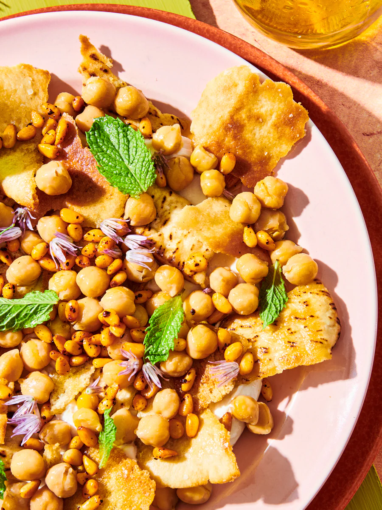

Fatteh (Spiced Chickpeas with Crispy Pita and Garlicky Yogurt)

Description
Fatteh, made with chickpeas, crispy pita chips, tahini, and garlicky yogurt, is a classic Middle Eastern recipe.
Ingredients
For The Yogurt Sauce:
1 cup plain whole milk yogurt
2 to 3 tablespoons tahini
1 to 2 garlic cloves, finely minced
2 lemons, juiced
Kosher salt
For The Chickpeas:
3 pita breads, pita pockets are preferred
Extra virgin olive oil
2 (15 ounce) cans chickpeas
1 teaspoon ground cumin
Kosher salt
Black pepper
1 garlic clove, minced
2 green onions, trimmed and both white and green parts chopped
⅓ cup pine nuts
1 teaspoon Aleppo pepper, optional
1 tablespoon minced parsley, for garnish
Directions
Preheat the oven: Heat the oven to 350°F.
Make the garlicky yogurt sauce: In a small mixing bowl, combine the yogurt, tahini, 1-2 minced garlic cloves, and lemon juice. Season with a big pinch of kosher salt. Whisk until well-combined. If needed, add a little bit of water 1 tablespoon at a time, to achieve a somewhat loose but creamy consistency.
Prepare the pita: If you are using pita pockets, split them in half through the middle so you have two thin rounds for each pita. Brush both sides with extra virgin olive oil, then slice into small triangles.
Toast the pita triangles: Arrange the pita triangles on a sheet pan in one single layer and toast in the heated oven until crispy and golden brown, about 5-7 minutes. Remove and set aside.
Simmer the chickpeas: Put the chickpeas and their liquid in a saucepan and add enough water to cover by a couple of inches. Add the cumin, a good dash of kosher salt and black pepper, and 1 clove of minced garlic. Simmer until the liquid is mostly absorbed, about 15 minutes.
Finish the chickpeas: When the chickpeas are ready and tender, turn the heat off, taste, and adjust seasoning. Add a drizzle of extra virgin olive oil and half of the chopped green onions. Toss to combine.
Toast the pine nuts: In a small skillet, warm 2 tablespoons of extra virgin olive oil over medium heat. Add the pine nuts and cook, tossing regularly, until they turn golden brown, about 2-3 minutes. Add Aleppo pepper (if using). The oil should turn a beautiful amber color. Turn the heat off immediately.
Assemble the fatteh: Arrange the majority of the crispy pita chips on a large plate or platter. Top the pita with about half of the cooked chickpeas, then add about half of the garlicky yogurt sauce on top to cover the chickpeas. Now, add the remaining pita and the rest of the chickpeas, finishing with the remainder of the garlicky yogurt sauce.
Garnish: Finally, pour the toasted pine nuts with the spicy olive oil over the top and sprinkle with the remaining chopped scallions. Serve immediately!